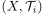
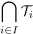
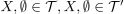
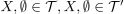
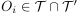
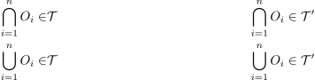

Schnitt von Topologien als Topologie
1. Satz
Sei  eine Familie von topologischen Räumen über der gleichen Grundmenge  Dann ist
Dann ist

1
ebenfalls eine Topologie
2. Beweis
2.1. a)
Leere Menge und als Elemente von  folgt aus .
folgt aus .
2.2. b)
Seien , so folgt wegen der Abgeschlossenheit gegenüber endlichen Schnitten / Abgeschlossenheit gegenüber Vereinigung

2
und damit erfüllt ebenfalls die Bedingungen einer Topologie
umschreiben